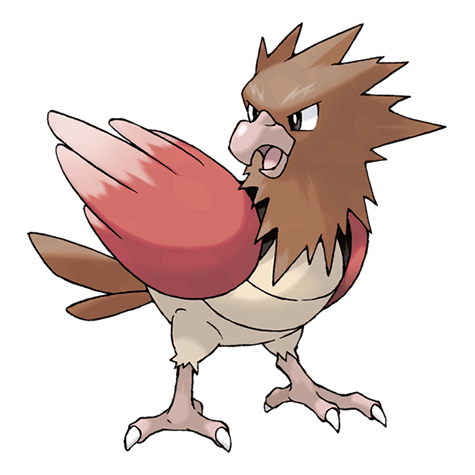
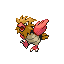

Спироу

Спироу — Покемон 1 поколения под номером 21 в Покедекс. Обитает он в регионе Канто и относится к Нормальному и Летающему типу. У Спироу очень громкий крик, который можно услышать почти за километр. Если слышен его высокий и пронзительный крик, это значит, что эти Покемоны предупреждают друг друга об опасности.
Тип и слабости:
Нормальный
Летающий
Эволюция

# 021 Спироу
=>
# 022 Фироу